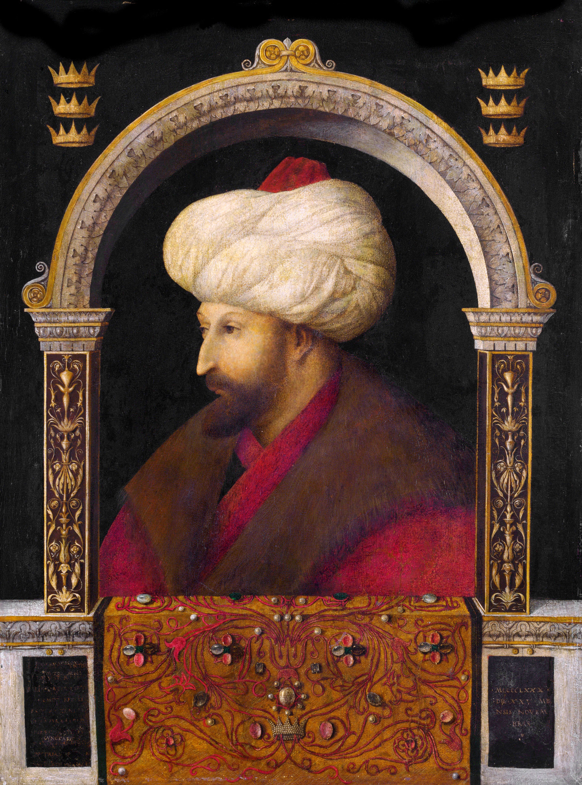

| önceki |  |
sonraki |
II. Mehmed (Fatih Sultan Mehmed), Osmanlı İmparatorluğu'nun yedinci padişahıdır. Babası II. Murad, annesi Hümâ Hatun'dur. 21 yaşında İstanbul'u fethederek 1058 yıllık Doğu Roma (Bizans) İmparatorluğu'na son vermiş, Orta Çağ'ı kapatıp Yeni Çağ'ı açmıştır. Askerî dehasının yanı sıra 6 dil bilen bir entelektüel, kanun koyucu ve "Avnî" mahlasıyla şiirler yazan kudretli bir divan şairidir.
İstanbul'un Fethi ve Büyük Seferleri
1451'de ikinci kez tahta çıktığında ilk hedef olarak Konstantiniyye'nin fethini belirlemiştir. Bu amaçla Boğazkesen (Rumeli) Hisarı'nı inşa ettirmiş, devasa Şâhi toplarını döktürmüş ve kuşatma sırasında donanmayı karadan yürüterek Haliç'e indirmiştir. 29 Mayıs 1453 Salı günü şehir fethedilmiş ve Osmanlı Devleti bir cihan imparatorluğu haline gelmiştir.
Saltanatı boyunca gerçekleştirdiği diğer büyük fetihler ve seferler:
- Balkanlar ve Ege: Sırbistan, Mora Yarımadası, Eflak, Boğdan, Bosna-Hersek, Arnavutluk ve Ege adaları Osmanlı topraklarına katıldı.
- Anadolu ve Karadeniz: Amasra Cenevizlilerden, Sinop İsfendiyaroğullarından alındı; 1461'de Trabzon Rum İmparatorluğu'na son verildi. 1475'te Kırım Hanlığı Osmanlı'ya bağlanarak Karadeniz bir "Türk Gölü" haline geldi.
- Otlukbeli Muharebesi (1473): Doğu Anadolu'da Akkoyunlu Devleti hükümdarı Uzun Hasan mağlup edilerek Anadolu hakimiyeti pekiştirildi.
- İtalya Seferi (Otranto - 1480): Gedik Ahmed Paşa komutasındaki Osmanlı donanması İtalya'nın güneyindeki Otranto Kalesi'ni fethederek Roma üzerine yürüme planlarını başlattı.
Devlet Teşkilatı ve Kültürel Mirası
Fatih Sultan Mehmed, devletin anayasası niteliğindeki Fatih Kanunnâme-i Âli Osmân'ı yürürlüğe koyarak devlet yönetimini merkeziyetçi bir yapıya kavuşturmuştur. Topkapı Sarayı'nı inşa ettirmiş, Sahn-ı Seman Medreseleri'ni kurarak imparatorluğu bilim ve felsefenin merkezi haline getirmiştir.
Ailesi
- Eşleri:
- Emine Gülbahar Hâtûn (II. Bayezid ve Gevherhan Hatun'un annesi)
- Çiçek Hâtûn (Cem Sultan'ın annesi)
- Gülşah Hâtûn (Şehzade Mustafa'nın annesi)
- Sitti Mükrime Hâtûn (Dulkadiroğlu Süleyman Bey'in kızı)
- Hatice Hâtûn (Zağanos Paşa'nın kızı)
- Erkek çocukları:
- II. Bayezid (1447 – 1512)
- Şehzade Mustafa (1450 – 1474)
- Cem Sultan (1459 – 1495)
- Şehzade Korkut (küçük yaşta vefat etmiştir)
- Kız çocukları:
- Gevherhan Hâtûn (Akkoyunlu Uğurlu Mehmed Bey ile evlenmiştir)
- Ayşe Hâtûn
Fatih Sultan Mehmed hakkında daha fazla bilgi için buraya tıklayın.